3 데이터 시각화
3.1 들어가기
“간단한 그래프는 다른 어떤 방법보다 데이터분석가에게 더 많은 정보를 제공한다.” — 죤 튜키 (John Tukey)
이 장에서는 ggplot2를 이용하여 데이터를 시각화하는 법을 배울 것이다. R 은 그래프를 만드는 몇몇 시스템이 있지만 ggplot2는 가장 우아하고 다재다능한 시스템 중 하나이다. ggplot2는 그래프를 기술하고 구축하는 시스템인 그래픽 문법을 구현한다. ggplot2으로 하나의 시스템을 배우고 이를 여러 곳에서 적용하여 빠르게 진행할 수 있다.
시작하기 전 ggplot2의 이론적 토대에 대해 더 자세히 알고 싶다면 The Layered Grammar of Graphics를 읽을 것을 추천한다.
3.1.1 준비하기
이 장에서는 tidyverse의 핵심 구성원 중 하나인 ggplot2을 집중하여 살펴본다. 이 장에서 사용할 데이터셋, 도움말 페이지, 함수에 접근하기 위해 다음 코드를 실행하여 tidyverse를 로드하라.
library(tidyverse)
#> ── Attaching packages ──────────────────────────────────────────────────────────────────────────────────────────────────────────────── tidyverse 1.2.1 ──
#> ✔ ggplot2 3.1.0.9000 ✔ purrr 0.2.5
#> ✔ tibble 1.4.2 ✔ dplyr 0.7.8
#> ✔ tidyr 0.8.2 ✔ stringr 1.3.1
#> ✔ readr 1.2.1 ✔ forcats 0.3.0
#> ── Conflicts ─────────────────────────────────────────────────────────────────────────────────────────────────────────────────── tidyverse_conflicts() ──
#> ✖ dplyr::filter() masks stats::filter()
#> ✖ dplyr::lag() masks stats::lag()이 한 줄의 코드만 입력하면 tidyverse 핵심패키지들이 로드되는데, 거의 모든 데이터 분석에서 이 패키지들을 사용할 것이다. 또한 이 코드는 tidyverse의 어떤 함수가 베이스 R 함수들 (혹은 이미 로드한 다른 패키지의 함수들)과 충돌하는지도 알려준다.
만약 이 코드를 실행하고 “there is no package called ‘tidyverse’”라는 오류 메시지가 뜨면 먼저 패키지를 설치한 후 library()를 다시 실행해야 한다.
install.packages("tidyverse")
library(tidyverse)패키지는 한 번만 인스톨하면 되지만, 새로운 세션을 시작할 때마다 다시 로드해야 한다.
어떤 함수나 데이터셋이 어느 패키지에서 왔는지 명시할 필요가 있는 경우에는 특수 형식인 package::function()를 사용할 것이다. 예를 들어 ggplot2::ggplot()는 ggplot2 패키지의 ggplot() 함수를 사용한다는 것을 명시한다.
3.2 첫 단계
다음의 질문에 답하기 위해 그래프를 이용해 보자. 엔진이 큰 차가 작은 차보다 연료를 더 많이 사용하는가? 이미 답은 알고 있겠지만, 답을 정교하게 만들어보자. 엔진 크기와 연비의 관계는 어떠한가? 양의 관계? 음의 관계? 선형? 비선형?
3.2.1 mpg 데이터프레임
ggplot2 (다른 표현으로 ggplot2::mpg)에 있는 mpg 데이터프레임으로 여러분의 답을 테스트할 수 있다. 데이터프레임은 변수들(열)과 관측값들(행)의 직사각형 형태 집합체이다. mpg에는 미 환경보호당국이 수집한 38개의 차 모델들에 대한 관측값들이 포함되어 있다.
mpg
#> # A tibble: 234 x 11
#> manufacturer model displ year cyl trans drv cty hwy fl class
#> <chr> <chr> <dbl> <int> <int> <chr> <chr> <int> <int> <chr> <chr>
#> 1 audi a4 1.8 1999 4 auto… f 18 29 p comp…
#> 2 audi a4 1.8 1999 4 manu… f 21 29 p comp…
#> 3 audi a4 2 2008 4 manu… f 20 31 p comp…
#> 4 audi a4 2 2008 4 auto… f 21 30 p comp…
#> 5 audi a4 2.8 1999 6 auto… f 16 26 p comp…
#> 6 audi a4 2.8 1999 6 manu… f 18 26 p comp…
#> # ... with 228 more rowsmpg에는 다음과 같은 변수들이 있다.
displ: 엔진 크기 (단위: 리터)hwy: 고속도로에서의 자동차 연비 (단위: 갤런당 마일, mpg). 같은 거리를 주행할 때, 연비가 낮은 차는 연비가 높은 차보다 연료를 더 많이 소비한다.
mpg에 대해 더 알고자 한다면 ?mpg를 실행하여 해당 도움말 페이지를 이용하라.
3.2.2 ggplot 생성하기
다음 코드를 실행하여 mpg를 플롯할 때 displ을 x축, hwy를 y축에 놓아라.
ggplot(data = mpg) +
geom_point(mapping = aes(x = displ, y = hwy))
이 플롯은 엔진 크기(displ)와 연비(hwy) 사이에 음의 관계가 있음을 보여준다. 다른 말로 하면 엔진이 큰 차들은 연료를 더 많이 사용한다. 이제 연비와 엔진 크기에 대한 여러분의 가설이 확인되거나 반증되었는가?
ggplot2에서는 ggplot() 함수로 플롯을 시작한다. ggplot()을 하면 레이어를 추가시킬 수 있는 좌표 시스템이 생성된다. ggplot()의 첫 번째 인수는 그래프에서 사용할 데이터셋이다. 따라서 ggplot(data = mpg)를 하면 빈 그래프가 생성되지만, 그리 흥미로운 것이 아니므로 생략하겠다.
그래프는 ggplot()에 레이어를 하나 이상 추가해서 완성된다. 함수 geom_point()는 플롯에 점 레이어를 추가하여 산점도를 생성한다. ggplot2에는 많은 geom 함수가 있는데, 각각은 플롯에 다른 유형의 레이어를 추가한다. 이 장에서 이 많은 함수를 모두 배울 것이다.
ggplot2의 각각의 geom 함수에는 매핑 인수가 있다. 이 인수는 데이터셋의 변수들이 시각적 속성으로 어떻게 매핑될 지를 정의한다. 이 인수는 항상 aes()와 쌍을 이루는데, aes()의 x, y 인수는 x, y축으로 매핑될 변수를 지정한다. ggplot2는 매핑된 변수를 데이터 인수(우리 경우엔 mpg)에서 찾는다.
3.2.3 그래프 작성 탬플릿
이제 이 코드를 ggplot2로 그래프를 만드는, 재사용 가능한 템플릿으로 바꿔보자. 그래프를 만들려면 다음의 코드에서 괄호 안의 부분을 해당되는 데이터셋, geom함수나 매핑모음으로 바꾸라.
ggplot(data = <DATA>) +
<GEOM_FUNCTION>(mapping = aes(<MAPPINGS>))이 장의 나머지 부분에서는 이 템플릿을 완성하고 확장하여 다른 유형의 그래프들을 만드는 법을 살펴볼 것이다. <MAPPINGS> 부분부터 시작해보자.
3.2.4 연습문제
ggplot(data = mpg)을 실행하라. 무엇이 나타나는가?mpg는 행이 몇 개인가? 열은 몇 개인가?drv변수는 무엇을 나타내는가??mpg로 도움말 페이지를 참고하여 알아보자.hwy대 **cyl`의 산점도를 만들어라.class대drv산점도를 만들면 어떻게 되는가? 이 플롯이 유용하지 않은 이유는 무엇인가?
3.3 Aesthetic mappings
“그래프는 전혀 예상하지 못한 것을 보여줄 때 가장 큰 가치가 있다.” - 죤 튜키
다음 플롯에서 한 그룹의 포인트들은(빨간색으로 강조) 선형 추세를 벗어나는 것 처럼 보인다. 이 차들은 예상한 것보다 더 높은 연비를 가진다. 이 차들을 어떻게 설명할 수 있을까?
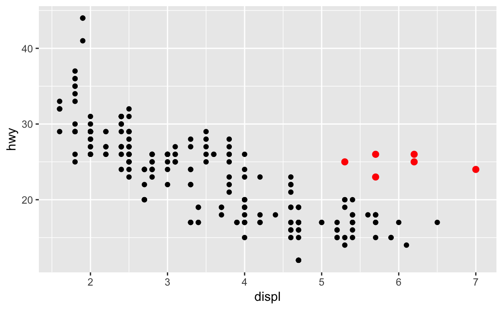
이 차들은 하이브리드 차라고 가설을 세워보자. 이 가설을 검정하는 방법으로 각 차의 class 값을 살펴보는 방법이 있다. mpg 데이터셋의 class 변수는 차를 소형, 중형, SUV 같은 그룹으로 분류한다. 이상점들이 하이브리드 차들이라면 소형이나 경차로 분류되었을 것이다. (이 데이터들은 하이브리드 트럭이나 SUV가 대중화되기 전에 수집되었음을 염두에 두자.)
class 같은 세 번째 변수를 aesthetics에 매핑하여 이차원 산점도에 추가할 수도 있다. aesthetics은 플롯에 객체들의 시각적 속성이다. aesthetics에는 포인트의 크기, 모양, 색상 같은 것들이 포함된다. aesthetics 속성 값을 변경하여 점을 (아래와 같이) 다른 방법으로 표시할 수 있다. 데이터를 설명할 때 ’값’이라는 용어를 이미 사용했으므로 aesthetics 속성을 설명할 때는 단어 ’수준(level)’이라는 용어를 사용하자. 여기에서는 크기, 모양, 색상의 수준을 변경하여 다음과 같이 점을 작게 혹은 삼각형이나 파란색으로 만들었다.
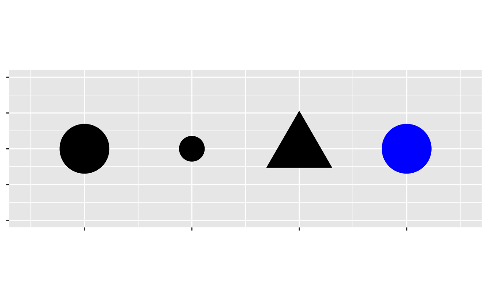
플롯의 aesthetics를 데이터셋의 변수들에 매핑해서 데이터에 대한 정보를 전달할 수 있다. 예를 들어 점의 색상을 class 변수에 매핑하여 각 차의 차종을 나타낼 수 있다.
ggplot(data = mpg) +
geom_point(mapping = aes(x = displ, y = hwy, color = class))
(해들리처럼 영국식 영어를 선호한다면 color 대신 colour를 사용할 수도 있다.)
aesthetics을 변수에 매핑하기 위해서는 aes() 내부에서 aesthetics 이름을 변수 이름과 연결해야 한다. ggplot2는 변수의 고유한 값에 aesthetics의 고유한 수준(여기서는 고유한 색상)을 자동으로 지정하는데, 이 과정을 스케일링 (scaling)이라고 한다. ggplot2는 어떤 수준이 어떤 값에 해당하는지를 설명하는 범례도 추가한다.
플롯의 색상들을 보면 이상점 중 다수가 2인승 차임을 보여준다. 이 차들은 하이브리드 차가 아닌 것 같고, 놀랍게도 스포츠카들이다! 스포츠카들은 SUV와 픽업트럭처럼 엔진이 크지만, 차체가 중형차나 소형차처럼 작아서 연비가 좋다. 다시 생각해보면 이 차들은 엔진 크기가 컸기 때문에 하이브리드일 가능성이 낮다.
위의 예제에서 class 변수를 색상 aesthetics에 매핑했지만 이 변수를 같은 방법으로 크기 aesthetics에 매핑할 수도 있다. 이 경우, 각 포인트의 정확한 크기는 차종을 나타낼 것이다. 여기서 경고가 뜨는데, 비순서 변수 (class)를 순서형 aesthetics (size)로 매핑하는 것은 좋은 생각이 아니기 때문이다.
ggplot(data = mpg) +
geom_point(mapping = aes(x = displ, y = hwy, size = class))
#> Warning: Using size for a discrete variable is not advised.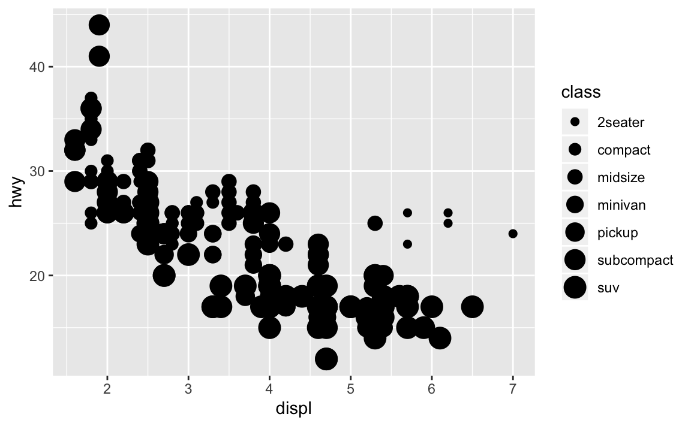
class`를 alpha aesthetic에 매핑할 수도 있었는데, 이는 포인트의 투명도 혹은 모양을 제어한다.
# Left
ggplot(data = mpg) +
geom_point(mapping = aes(x = displ, y = hwy, alpha = class))
# Right
ggplot(data = mpg) +
geom_point(mapping = aes(x = displ, y = hwy, shape = class))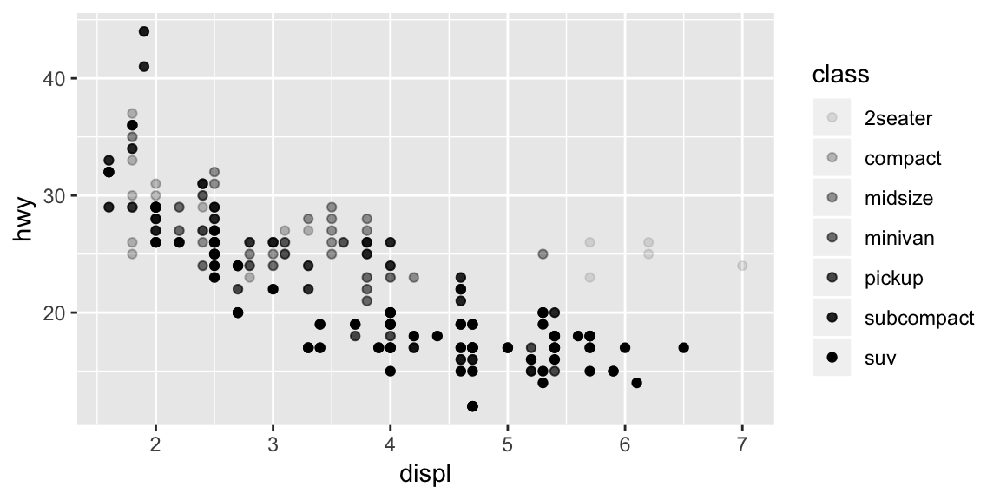
What happened to the SUVs? ggplot2 will only use six shapes at a time. By default, additional groups will go unplotted when you use the shape aesthetic.
For each aesthetic, you use aes() to associate the name of the aesthetic with a variable to display. The aes() function gathers together each of the aesthetic mappings used by a layer and passes them to the layer’s mapping argument. The syntax highlights a useful insight about x and y: the x and y locations of a point are themselves aesthetics, visual properties that you can map to variables to display information about the data.
Once you map an aesthetic, ggplot2 takes care of the rest. It selects a reasonable scale to use with the aesthetic, and it constructs a legend that explains the mapping between levels and values. For x and y aesthetics, ggplot2 does not create a legend, but it creates an axis line with tick marks and a label. The axis line acts as a legend; it explains the mapping between locations and values.
You can also set the aesthetic properties of your geom manually. For example, we can make all of the points in our plot blue:
ggplot(data = mpg) +
geom_point(mapping = aes(x = displ, y = hwy), color = "blue")
Here, the color doesn’t convey information about a variable, but only changes the appearance of the plot. To set an aesthetic manually, set the aesthetic by name as an argument of your geom function; i.e. it goes outside of aes(). You’ll need to pick a level that makes sense for that aesthetic:
The name of a color as a character string.
The size of a point in mm.
The shape of a point as a number, as shown in Figure 3.1.
Figure 3.1: R has 25 built in shapes that are identified by numbers. There are some seeming duplicates: for example, 0, 15, and 22 are all squares. The difference comes from the interaction of the colour and fill aesthetics. The hollow shapes (0–14) have a border determined by colour; the solid shapes (15–18) are filled with colour; the filled shapes (21–24) have a border of colour and are filled with fill.
3.3.1 연습문제
What’s gone wrong with this code? Why are the points not blue?
ggplot(data = mpg) + geom_point(mapping = aes(x = displ, y = hwy, color = "blue"))
Which variables in
mpgare categorical? Which variables are continuous? (Hint: type?mpgto read the documentation for the dataset). How can you see this information when you runmpg?Map a continuous variable to
color,size, andshape. How do these aesthetics behave differently for categorical vs. continuous variables?What happens if you map the same variable to multiple aesthetics?
What does the
strokeaesthetic do? What shapes does it work with? (Hint: use?geom_point)What happens if you map an aesthetic to something other than a variable name, like
aes(colour = displ < 5)? Note, you’ll also need to specify x and y.
3.4 Common problems
As you start to run R code, you’re likely to run into problems. Don’t worry — it happens to everyone. I have been writing R code for years, and every day I still write code that doesn’t work!
Start by carefully comparing the code that you’re running to the code in the book. R is extremely picky, and a misplaced character can make all the difference. Make sure that every ( is matched with a ) and every " is paired with another ". Sometimes you’ll run the code and nothing happens. Check the left-hand of your console: if it’s a +, it means that R doesn’t think you’ve typed a complete expression and it’s waiting for you to finish it. In this case, it’s usually easy to start from scratch again by pressing ESCAPE to abort processing the current command.
One common problem when creating ggplot2 graphics is to put the + in the wrong place: it has to come at the end of the line, not the start. In other words, make sure you haven’t accidentally written code like this:
ggplot(data = mpg)
+ geom_point(mapping = aes(x = displ, y = hwy))If you’re still stuck, try the help. You can get help about any R function by running ?function_name in the console, or selecting the function name and pressing F1 in RStudio. Don’t worry if the help doesn’t seem that helpful - instead skip down to the examples and look for code that matches what you’re trying to do.
If that doesn’t help, carefully read the error message. Sometimes the answer will be buried there! But when you’re new to R, the answer might be in the error message but you don’t yet know how to understand it. Another great tool is Google: try googling the error message, as it’s likely someone else has had the same problem, and has gotten help online.
3.5 면분할(facet)
변수를 추가하는 방법으로 aesthetic을 이용하는 방법을 보았다. 또다른 방법은 범주형 변수에 특히 유용한 방법인데, 플롯을 데이터 서브셋을 각각 표시하는 하위플롯인 면분할(facet)로 나누는 것이다.
플롯을 하나의 변수에 대해 면분할(facet) 하기 위해서는, facet_wrap()을 이용하면 된다. facet_wrap()의 첫 번째 인수로는 ~와 따라나오는 변수 이름으로 된 공식(formula)이어야 한다. (여기서 ’공식‘ 은 R 의 데이터 구조의 한 형태이며 ’등식(equation)’과 같은 의미가 아니다.) facet_wrap()에 전달하는 변수는 이산형이어야 한다.
ggplot(data = mpg) +
geom_point(mapping = aes(x = displ, y = hwy)) +
facet_wrap(~ class, nrow = 2)
플롯을 두 변수 조합으로 면분할하기 위해서는 facet_grid()를 플롯 호출에 추가하면 된다. facet_grid()의 첫 번째 인수도 공식이다. 이번에는 공식이 두 개의 변수가 ~로 분리되어 있는 형태여야 한다.
ggplot(data = mpg) +
geom_point(mapping = aes(x = displ, y = hwy)) +
facet_grid(drv ~ cyl)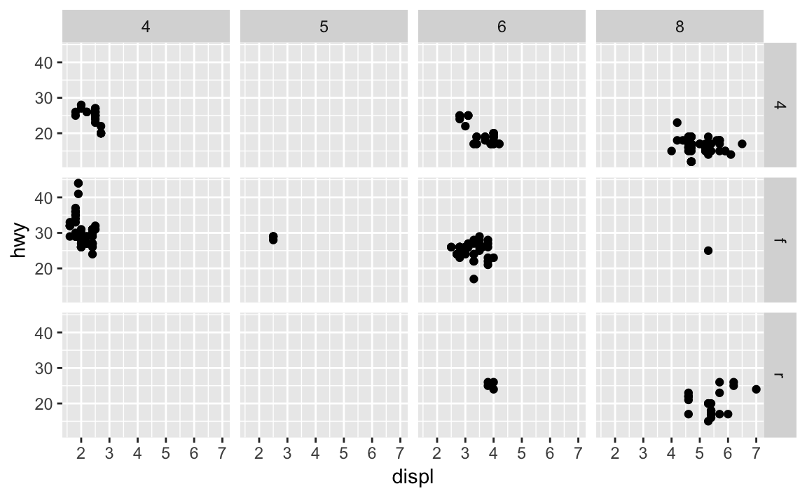
열이나 행으로 면분할하고 싶지 않다면 변수 이름 대신 .를 이용하라. (예: + facet_grid(. ~ cyl))
3.5.1 연습문제
연속형 변수로 면분할하면 어떻게 되는가?
facet_grid(drv ~ cyl)로 만든 플롯에 있는 빈 셀들은 무엇을 의미하는가? 다음의 플롯과 어떻게 연관되는가?ggplot(data = mpg) + geom_point(mapping = aes(x = drv, y = cyl))다음의 코드는 어떤 플롯을 만드는가?
.은 어떤 역할을 하는가?ggplot(data = mpg) + geom_point(mapping = aes(x = displ, y = hwy)) + facet_grid(drv ~ .) ggplot(data = mpg) + geom_point(mapping = aes(x = displ, y = hwy)) + facet_grid(. ~ cyl)이 절의 면분할된 첫 번째 플롯을 살펴보라.
ggplot(data = mpg) + geom_point(mapping = aes(x = displ, y = hwy)) + facet_wrap(~ class, nrow = 2)색상 aesthetic을 쓰지 않고 면분할하는 것은 어떤 이점이 있는가? 단점은 무엇인가? 데이터가 더 크다면 이 균형은 어떻게 바뀌겠는가?
?facet_wrap을 읽어라.nrow의 역할은 무엇인가?ncol은 어떤 일을 하는가? 개별 패널의 배치를 조정하는 기타 옵션들은 무엇인가?facet_grid()에는nrow, ncol인수가 왜 없는가?facet_grid()를 사용할 때, 대개의 경우 고유 수준이 더 많은 변수를 열로 두어야 한다. 왜인가?
3.6 기하 객체
두 플롯은 유사한가?


두 플롯은 동일한 x 변수, 동일한 y 변수를 포함하고, 동일한 데이터를 나타낸다. 그러나 둘은 같지 않다. 각 플롯은 데이터를 표현하는 시각 객체가 다르다. ggplot2 문법으로는 두 플롯이 다른 지옴(geom)을 사용한다고 말한다.
지옴은 데이터를 나타내기 위해 플롯이 사용하는 기하 객체(geometric object)이다. 사람들은 플롯이 사용하는 지옴의 유형으로 플롯을 기술한다. 예를 들어 막대 차트는 막대 지옴들을 이용하고, 라인 차트는 라인 지옴을, 박스플롯은 박스플롯 지옴을 이용하는 식이다. 산점도는 추세를 망가뜨린다. 즉, 포인트 지옴을 사용한다. 위에서 보았듯이, 같은 데이터를 플롯하기 위해 다른 지옴을 사용할 수 있다. 왼쪽의 플롯은 포인트 지옴을 사용했고, 오른쪽의 플롯은 평활(smooth) 지옴, 즉 데이터에 적합된 평활선을 이용했다.
플롯에서 지옴을 바꾸기 위해서는 ggplot()에 추가하는 지옴 함수를 변경하면 된다. 예를 들어 다음의 코드를 사용하여 위 플롯들을 만들었다.
# left
ggplot(data = mpg) +
geom_point(mapping = aes(x = displ, y = hwy))
# right
ggplot(data = mpg) +
geom_smooth(mapping = aes(x = displ, y = hwy))ggplot2의 모든 지옴 함수는 mapping 인수를 가진다. 그러나 모든 aesthetic이 모든 지옴과 작동하는 것은 아니다. 포인트의 shape(모양)을 설정할 수 있지만, 선의 ’shape’을 설정할 수는 없다. 반면, 라인의 linetype(선유형)을 설정할 수 있다. geom_smooth()는 linetype으로 매핑된 변수의 각 고유 값마다 다른 형태의 선을 그린다.
ggplot(data = mpg) +
geom_smooth(mapping = aes(x = displ, y = hwy, linetype = drv))
여기서 geom_smooth()는 자동차의 동력전달장치를 의미하는 drv 값에 기초하여 차 모델들을 세 개의 선으로 분리한다. 선 하나는 4 값을 가진 점들 모두를 표시하고, 다른 선은 f을 가진 모든 점을, 또 다른 선은 r 값을 가진 모든 점을 표시한다. 여기서 4는 사륜구동, f는 전륜구동, r은 후륜구동을 나타낸다.
이것이 이상하게 들린다면 원 데이터 위에 선들을 겹쳐 그린 후, 선과 점을 drv에 따라 색상을 입히면 좀 더 명료하게 만들 수 있다.
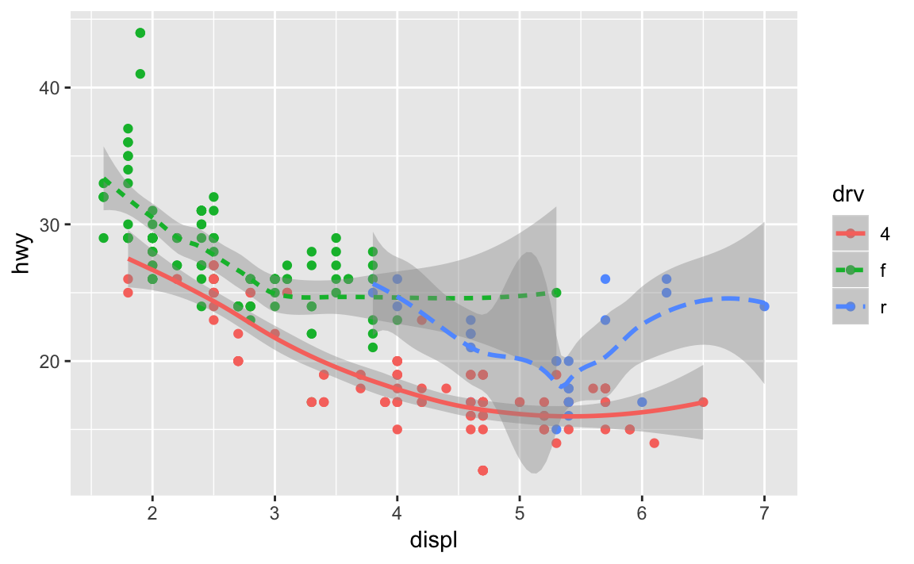
이 플롯은 같은 그래프에 두 개의 지옴을 포함하고 있는 것을 주목하라! 흥미로운가? 그러면 자, 기대하시라. 다음 절에서는 같은 플롯에 다중의 지옴을 놓는 방법을 배울 것이다.
ggplot2에는 30개가 넘는 지옴이 있고, 확장 패키지에는 더 많은 지옴이 있다. (예제는 https://www.ggplot2-exts.org에 있다). 포괄적인 개요는 ggplot2 치트시트에서 가장 잘 볼 수 있는데, http://rstudio.com/cheatsheets에서 얻을 수 있다. 더 배우고 싶은 지옴이 있다면 ?geom_smooth 같이 도움말을 이용하라.
geom_smooth() 같이 많은 수의 지옴은 데이터의 열, 여러 개를 표시 하기 위해 하나의 기하 객체를 사용한다. 이러한 지옴들에 대해 그룹 aesthetic을 다중 객체를 그리는 범주형 변수로 설정할 수 있다. ggplot2는 그룹 변수의 각 고유값에 따라 별도의 객체를 그린다. 실제로는 ggplot2는 (linetype 예제에서와 같이) aesthetic을 이산형 변수에 매핑할 때마다 이 지옴들에 대한 데이터를 자동으로 그룹화한다. 그룹 aesthetic은 기본적으로 범례를 추가하거나 구별시켜주는 기능들을 추가하지 않기 때문에, 이 기능을 활용하면 편리하다.
ggplot(data = mpg) +
geom_smooth(mapping = aes(x = displ, y = hwy))
ggplot(data = mpg) +
geom_smooth(mapping = aes(x = displ, y = hwy, group = drv))
ggplot(data = mpg) +
geom_smooth(
mapping = aes(x = displ, y = hwy, color = drv),
show.legend = FALSE
) 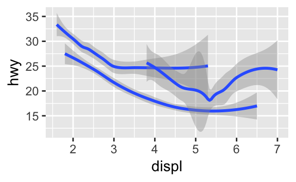
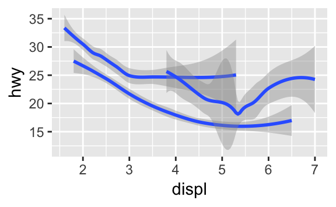
같은 플롯에 여러 지옴을 표시하려면 ggplot()에 여러 지옴 함수를 추가하라.
ggplot(data = mpg) +
geom_point(mapping = aes(x = displ, y = hwy)) +
geom_smooth(mapping = aes(x = displ, y = hwy))
그러나 이렇게 하면 코드에 중복이 생긴다. y-축을 hwy 대신 cty을 표시하도록 변경한다고 해보자. 두 군데에서 변수를 변경해야 하는데, 하나를 업데이트하는 것을 잊어버릴 수 있다. 이러한 종류의 중복은 매핑 집합을 ggplot()으로 전달하여 피할 수 있다. 이렇게 하면 ggplot2는 이 매핑들을 전역 매핑으로 처리하여 그래프의 각 지옴에 적용한다. 다른 말로 하면 다음의 코드는 이전 코드와 동일한 플롯을 생성한다.
ggplot(data = mpg, mapping = aes(x = displ, y = hwy)) +
geom_point() +
geom_smooth()지옴 함수에 매핑을 넣으면 ggplot2는 해당 레이어에 대한 로컬 매핑으로 처리한다. 이 매핑으로 전역 매핑을 확장하거나 덮어쓴 뒤 해당 레이어에만 적용한다. 이렇게 하면 다른 레이어마다 다른 aesthetic을 표시하는 것이 가능하다.
ggplot(data = mpg, mapping = aes(x = displ, y = hwy)) +
geom_point(mapping = aes(color = class)) +
geom_smooth()
같은 원리로 각 레이어마다 다른 데이터를 지정할 수 있다. 여기서 우리의 평활선은 mpg** 데이터셋의 서브셋인 경차만을 표시했다.geom_smooth()의 로컬 데이터 인수는 해당 레이어에 한해서만ggplot()`의 전역 데이터 인수를 덮어쓴다.
ggplot(data = mpg, mapping = aes(x = displ, y = hwy)) +
geom_point(mapping = aes(color = class)) +
geom_smooth(data = filter(mpg, class == "subcompact"), se = FALSE)
(filter()의 작동방식에 대해서 다음 장에서 배울 것이다. 여기에서는 이 명령어는 경차만 선택하라는 것으로 이해하라.)
3.6.1 연습문제
선 차트를 그리기 위해 어떤 지옴을 사용하겠는가? 박스플롯인가? 히스토그램인가? 면적(area) 차트인가?
머릿속으로 다음의 코드를 실행하고 출력이 어떨지 예측해보라. 그 후, R 에서 코드를 실행하고 여러분의 예측을 확인하라.
ggplot(data = mpg, mapping = aes(x = displ, y = hwy, color = drv)) + geom_point() + geom_smooth(se = FALSE)show.legend = FALSE는 어떤 역할을 하는가? 삭제하면 어떻게 되는가? 앞에서 왜 이를 사용했겠는가?geom_smooth()의se인수는 어떤 역할을 하는가?다음의 두 그래프는 다르게 나타나겠는가? 왜 그런가∙그렇지 않은가?
ggplot(data = mpg, mapping = aes(x = displ, y = hwy)) + geom_point() + geom_smooth() ggplot() + geom_point(data = mpg, mapping = aes(x = displ, y = hwy)) + geom_smooth(data = mpg, mapping = aes(x = displ, y = hwy))다음의 그래프들을 생성하는 데 필요한 R 코드를 다시 작성하라.


3.7 통계적 변환
다음으로, 막대 차트를 보자. 막대 차트는 간단할 것 같지만, 플롯에 대해 미묘한 것을 드러내기 때문에 흥미로운 차트이다. geom_bar()로 그려지는 기본 막대 차트를 생각해보라. 다음의 차트는 diamonds 데이터셋에서 cut으로 그룹한 다아아몬드의 총 개수를 표시한다. diamond 데이터셋은 ggplot2에 있으며 약 54,000개 다이아몬드 각각의 가격(price), 캐럿(carat), 색상(color), 투명도(clarity), 컷(cut)과 같은 정보가 있다. 차트는 저품질 컷보다 고품질 컷의 다이아몬드가 더 많음을 보여준다.
ggplot(data = diamonds) +
geom_bar(mapping = aes(x = cut))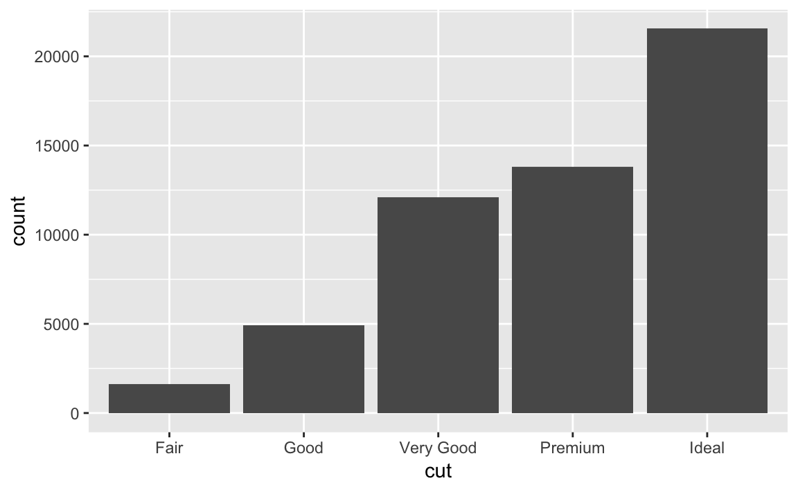
이 차트는 x-축으로 diamond의 변수 중 하나인 cut을 표시한다. y-축으로 count를 표시하는데 count는 diamonds의 변수가 아니다! count는 어디서 오는가? 산점도와 같은 다수의 그래프는 데이터셋의 원 값을 플롯한다. 막대 차트와 같은 다른 그래프는 플롯할 새로운 값을 계산한다.
막대 차트, 히스토그램, 빈도 다각형은 데이터를 계급(bin)으로 만든 후, 각 계급에 떨어지는 점들의 개수인 도수를 플롯한다.
평활 차트들은 데이터에 모델을 적합한 후 모델을 이용한 예측값을 플롯한다.
박스플롯은 분포의 로버스트한 요약값을 계산한 후 특수한 형태의 박스로 표시한다.
그래프에 사용할 새로운 값을 계산하는 알고리즘은 통계적 변환의 줄임말인 스탯(stat)이라고 부른다. 다음의 그림은 이 과정이 geom_bar()과 어떻게 작동하는지를 보여준다.

stat 인수의 기본값을 조사하여 한 지옴이 어떤 스탯을 사용하는지 알 수 있다. 예를 들어 ?geom_bar를 하면 stat이 ’count‘임을 보여주는데, 이는 geom_bar()가 stat_count()를 이용함을 의미한다. stat_count()는 geom_bar()와 같은 페이지에 문서화되어 있으며, 스크롤해서 내려가면 ’계산된 변수들‘이라고 하는 섹션을 볼 수 있다. 두 개의 새로운 변수, count, prop을 계산한 방법을 설명한다.
지옴과 스탯을 서로 바꿔서 사용할 수 있다. 예를 들어 이전 플롯을 geom_bar() 대신 stat_count()를 사용하여 생성할 수 있다.
ggplot(data = diamonds) +
stat_count(mapping = aes(x = cut))
모든 지옴은 기본 스탯이 있고 모든 스탯은 기본 지옴이 있기 때문에 이것이 가능하다. 다시 말하면 일반적으로 내부 통계적 변환에 대해 신경 쓸 필요 없이 지옴을 사용할 수 있다. 명시적으로 스탯을 사용해야 하는 이유는 세 가지이다.
기본 스탯을 덮어쓰고 싶을 수 있다. 다음의 코드에서
geom_bar()의 스탯을 count (기본값)에서 identity로 변경했다. 이렇게 하면 막대의 높이를 y 변수의 원 값으로 매핑할 수 있다. 안타깝게도 사람들이 막대 그래프에 대해 이야기할 때, 막대의 높이가 데이터에 존재하는 그래프를 의미하기도 하고, 또는 행을 세서 생성되는, 앞서 본 막대그래프를 의미하기도 한다.demo <- tribble( ~cut, ~freq, "Fair", 1610, "Good", 4906, "Very Good", 12082, "Premium", 13791, "Ideal", 21551 ) ggplot(data = demo) + geom_bar(mapping = aes(x = cut, y = freq), stat = "identity")
(<-나 tribble()을 전에 보지 못했더라도 걱정하지 마라. 문맥에서 의미를 추론할 수 있고, 이들의 정확한 역할을 곧 배울 것이다!)
변환된 변수에서 aesthetic으로 기본 매핑을 덮어쓰고자 할 수 있다. 예를 들어 빈도가 아니라 비율의 막대 그래프를 표시하고자 할 수 있다.
ggplot(data = diamonds) + geom_bar(mapping = aes(x = cut, y = ..prop.., group = 1))
스탯이 계산한 변수를 찾기 위해서는 ’computed variables‘ 제목의 도움말 섹션을 살펴보라.
코드에서 통계적 변환에 주의를 많이 집중시키고자 할 수 있다. 예를 들어 계산하는 요약값에 주의를 집중시키고자 고유한 x 값 각각에 대해 y 값을 요약하는
stat_summary()를 사용할 수 있다.ggplot(data = diamonds) + stat_summary( mapping = aes(x = cut, y = depth), fun.ymin = min, fun.ymax = max, fun.y = median )
ggplot2에는 20개가 넘는 스탯이 있다. 각 스탯은 함수이므로 평소 하듯이 도움말을 볼 수 있다 (예: ?stat_bin). 스탯 전체 목록을 보려면 ggplot2 치트시트를 보라.)
3.7.1 연습문제
What is the default geom associated with
stat_summary()? How could you rewrite the previous plot to use that geom function instead of the stat function?What does
geom_col()do? How is it different togeom_bar()?Most geoms and stats come in pairs that are almost always used in concert. Read through the documentation and make a list of all the pairs. What do they have in common?
What variables does
stat_smooth()compute? What parameters control its behaviour?In our proportion bar chart, we need to set
group = 1. Why? In other words what is the problem with these two graphs?ggplot(data = diamonds) + geom_bar(mapping = aes(x = cut, y = ..prop..)) ggplot(data = diamonds) + geom_bar(mapping = aes(x = cut, fill = color, y = ..prop..))
3.8 위치 조정
막대 그래프와 연관된 마법 한 가지가 더 있다. 막대 그래프에 색상을 입힐 수 있는데, color aesthetic을 이용하거나, 좀 더 유용하게는 fill을 이용하면 된다.
ggplot(data = diamonds) +
geom_bar(mapping = aes(x = cut, colour = cut))
ggplot(data = diamonds) +
geom_bar(mapping = aes(x = cut, fill = cut))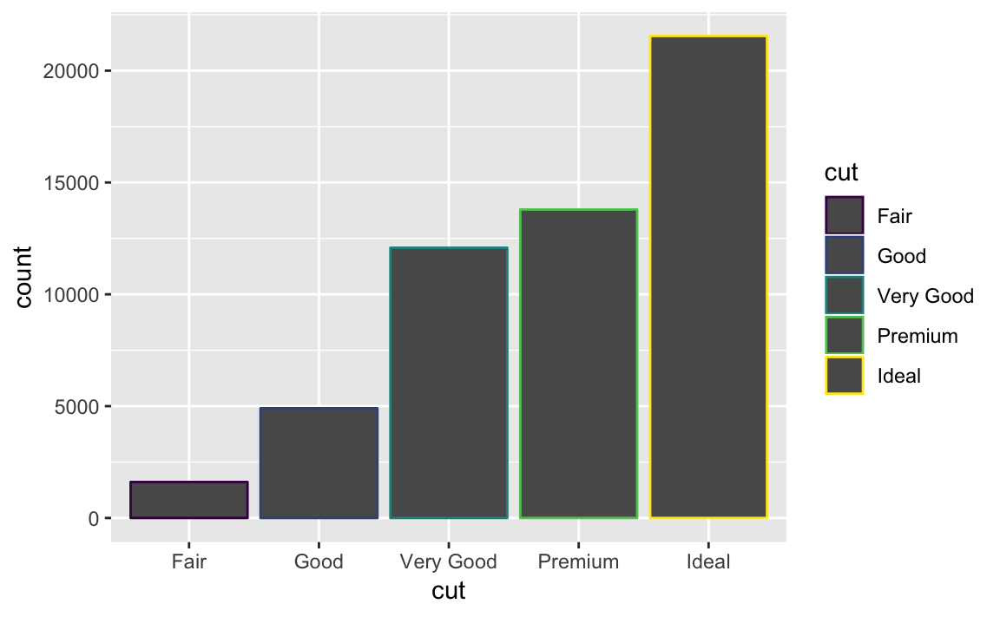
fill aesthetic을 다른 변수(예: clarity)에 매핑하면 어떤 일이 일어나는지 잘 보자. 누적 막대 그래프가 생성된다. 각각의 색상이 입혀진 직사각형은 cut과 clarity의 조합을 나타낸다.
ggplot(data = diamonds) +
geom_bar(mapping = aes(x = cut, fill = clarity))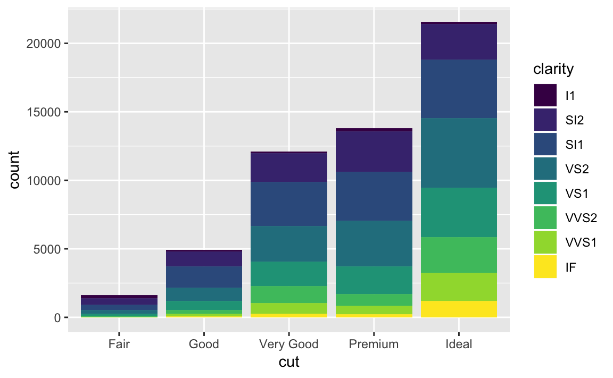
position 인수로 지정하는 위치 조정에 의해 막대 누적이 자동으로 수행된다. 누적막대그래프를 원하지 않는다면 다음의 "identity", "dodge", "fill" 세 옵션 중 하나를 선택하면 된다.
position = "identity"를 하면 각 객체를 그래프 문맥에 해당되는 곳에 정확히 배치한다. 막대와 겹치기 때문에 막대에 대해서는 그다지 유용하지 않다. 겹치는 것을 구별하려면alpha를 작은 값으로 설정하여 막대들을 약간 투명하게 하거나,fill = NA로 설정하여 완전히 투명하게 해야 한다.ggplot(data = diamonds, mapping = aes(x = cut, fill = clarity)) + geom_bar(alpha = 1/5, position = "identity") ggplot(data = diamonds, mapping = aes(x = cut, colour = clarity)) + geom_bar(fill = NA, position = "identity")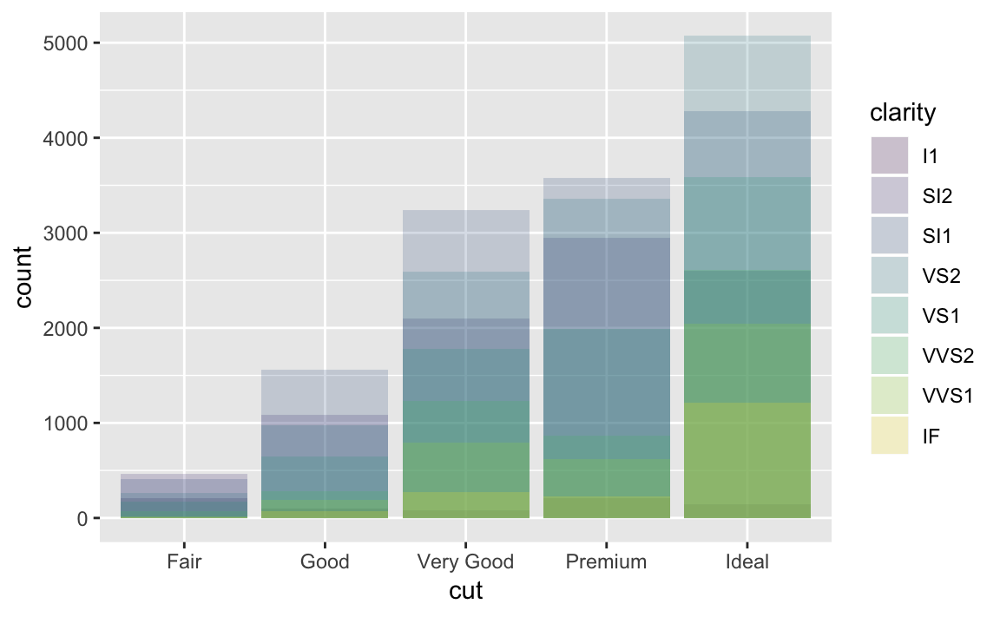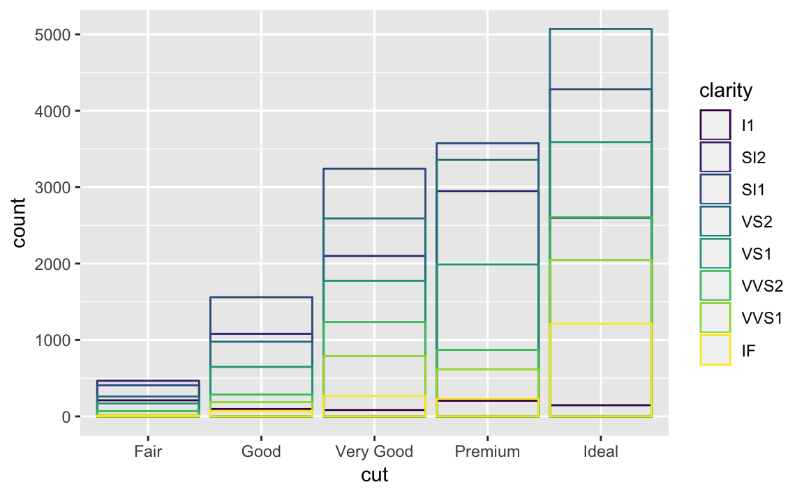
identity 위치 조정은 point 와 같은 2차원 지옴(예: 포인트)에서 더 유용한데 여기에서는 identity가 기본값이다.
position = "fill"은 누적막대처럼 동작하지만 누적막대들이 동일한 높이를 갖도록 한다. 이렇게 하면 그룹들 사이에 비율을 비교하기 쉬워진다.ggplot(data = diamonds) + geom_bar(mapping = aes(x = cut, fill = clarity), position = "fill")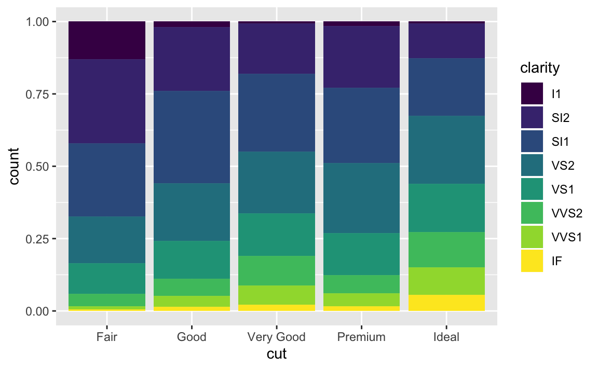
position = "dodge"를 하면 겹치는 객체가 서로 옆에 배치된다. 이렇게 하면 개별 값들을 비교하기 쉬워진다.ggplot(data = diamonds) + geom_bar(mapping = aes(x = cut, fill = clarity), position = "dodge")
막대 그래프에는 유용하지 않지만 산점도에 매우 유용한 다른 형태의 조정도 있다. 우리의 첫 번째 산점도를 떠올려보라. 데이터셋에 234개 관측값이 있는데도 플롯에서 126개 점만 표시하고 있다는 것을 눈치챘는가?

hwy와 displ의 값들이 반올림이 되어서 점들이 격자 위에 나타나 많은 점들이 서로 겹쳤다. 이 문제를 오버플롯팅이라고 한다. 이러한 방식은 많은 데이터들이 어디에 있는지 보기 힘들게 만든다. 데이터 포인트들이 그래프에 걸쳐 동일하게 퍼져있는가? 아니면 hwy와 displ의 특정 조합이 109개 값을 포함하고 있는가?
위치 조정을 ’지터(jitter)’로 설정하여 이 격자 방법을 피할 수 있다. position = "jitter"를 하면 각 점에 적은 양의 랜덤 노이즈가 추가된다. 이렇게 하면 어느 두 점도 같은 양의 랜덤 노이즈를 받을 가능성이 없기 때문에 포인트가 퍼지게 된다.
ggplot(data = mpg) +
geom_point(mapping = aes(x = displ, y = hwy), position = "jitter")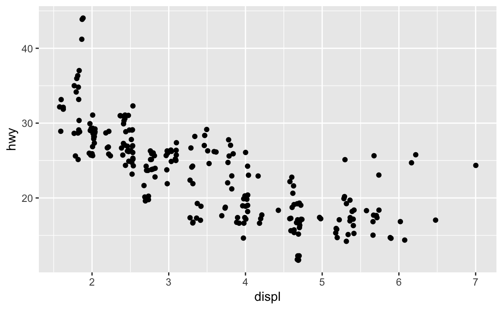
랜덤을 추가해서 플롯을 개선하는 것은 이상해 보이지만, 작은 스케일에서는 그래프가 덜 정확해지는 대신, 큰 스케일에서는 그래프가 더 표현력 있게 된다. 이 방법은 매우 유용하며, ggplot2에는 geom_point(position = "jitter")를 축약한 geom_jitter()가 있다.
위치 조정에 대해 더 배우고 싶으면 다음과 같이 각 조정과 연관된 도움말 페이지를 찾아보라. ?position_dodge, ?position_fill, ?position_identity, ?position_jitter, and ?position_stack.
3.8.1 연습문제
What is the problem with this plot? How could you improve it?
ggplot(data = mpg, mapping = aes(x = cty, y = hwy)) + geom_point()
What parameters to
geom_jitter()control the amount of jittering?Compare and contrast
geom_jitter()withgeom_count().What’s the default position adjustment for
geom_boxplot()? Create a visualisation of thempgdataset that demonstrates it.
3.9 좌표계
Coordinate systems are probably the most complicated part of ggplot2. The default coordinate system is the Cartesian coordinate system where the x and y positions act independently to determine the location of each point. There are a number of other coordinate systems that are occasionally helpful.
coord_flip()switches the x and y axes. This is useful (for example), if you want horizontal boxplots. It’s also useful for long labels: it’s hard to get them to fit without overlapping on the x-axis.ggplot(data = mpg, mapping = aes(x = class, y = hwy)) + geom_boxplot() ggplot(data = mpg, mapping = aes(x = class, y = hwy)) + geom_boxplot() + coord_flip()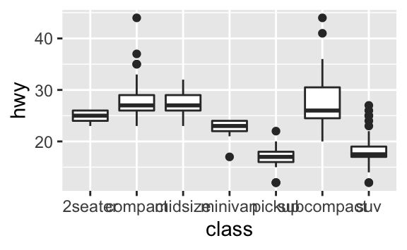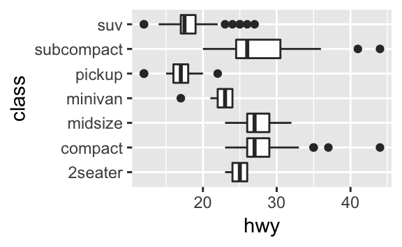
coord_quickmap()sets the aspect ratio correctly for maps. This is very important if you’re plotting spatial data with ggplot2 (which unfortunately we don’t have the space to cover in this book).nz <- map_data("nz") ggplot(nz, aes(long, lat, group = group)) + geom_polygon(fill = "white", colour = "black") ggplot(nz, aes(long, lat, group = group)) + geom_polygon(fill = "white", colour = "black") + coord_quickmap()

coord_polar()uses polar coordinates. Polar coordinates reveal an interesting connection between a bar chart and a Coxcomb chart.bar <- ggplot(data = diamonds) + geom_bar( mapping = aes(x = cut, fill = cut), show.legend = FALSE, width = 1 ) + theme(aspect.ratio = 1) + labs(x = NULL, y = NULL) bar + coord_flip() bar + coord_polar()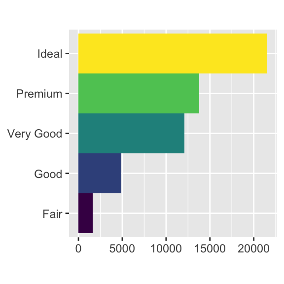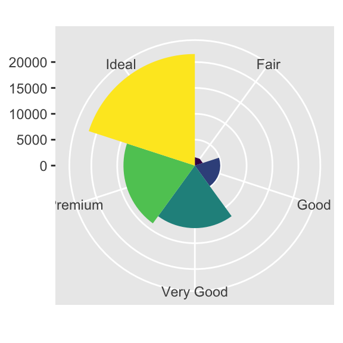
3.9.1 연습문제
Turn a stacked bar chart into a pie chart using
coord_polar().What does
labs()do? Read the documentation.What’s the difference between
coord_quickmap()andcoord_map()?What does the plot below tell you about the relationship between city and highway mpg? Why is
coord_fixed()important? What doesgeom_abline()do?ggplot(data = mpg, mapping = aes(x = cty, y = hwy)) + geom_point() + geom_abline() + coord_fixed()
3.10 The layered grammar of graphics
In the previous sections, you learned much more than how to make scatterplots, bar charts, and boxplots. You learned a foundation that you can use to make any type of plot with ggplot2. To see this, let’s add position adjustments, stats, coordinate systems, and faceting to our code template:
ggplot(data = <DATA>) +
<GEOM_FUNCTION>(
mapping = aes(<MAPPINGS>),
stat = <STAT>,
position = <POSITION>
) +
<COORDINATE_FUNCTION> +
<FACET_FUNCTION>Our new template takes seven parameters, the bracketed words that appear in the template. In practice, you rarely need to supply all seven parameters to make a graph because ggplot2 will provide useful defaults for everything except the data, the mappings, and the geom function.
The seven parameters in the template compose the grammar of graphics, a formal system for building plots. The grammar of graphics is based on the insight that you can uniquely describe any plot as a combination of a dataset, a geom, a set of mappings, a stat, a position adjustment, a coordinate system, and a faceting scheme.
To see how this works, consider how you could build a basic plot from scratch: you could start with a dataset and then transform it into the information that you want to display (with a stat).

Next, you could choose a geometric object to represent each observation in the transformed data. You could then use the aesthetic properties of the geoms to represent variables in the data. You would map the values of each variable to the levels of an aesthetic.

You’d then select a coordinate system to place the geoms into. You’d use the location of the objects (which is itself an aesthetic property) to display the values of the x and y variables. At that point, you would have a complete graph, but you could further adjust the positions of the geoms within the coordinate system (a position adjustment) or split the graph into subplots (faceting). You could also extend the plot by adding one or more additional layers, where each additional layer uses a dataset, a geom, a set of mappings, a stat, and a position adjustment.

You could use this method to build any plot that you imagine. In other words, you can use the code template that you’ve learned in this chapter to build hundreds of thousands of unique plots.